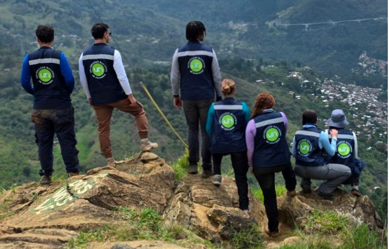

Estudios de Detalle de Amenaza, Vulnerabilidad y Riesgo Borde Nororiental de Medellín
Estudios técnicos de alta precisión para la toma de decisiones de alto impacto social. En articulación con la Universidad Nacional de Colombia, Sede Medellín, el semillero GeoHazards y la Alcaldía de Medellín, trabajamos con y para las comunidades del Borde Nororiental.
Tablero de Indicadores · Actualización noviembre 2025
¿Qué son los Estudios de Riesgo de Detalle?
Es un estudio técnico especializado que analiza, con alta precisión (escala 1:2.000), la amenaza, la vulnerabilidad y el riesgo en zonas específicas del territorio donde existe posibilidad de deslizamientos o avenidas torrenciales. Esto permite identificar condiciones del suelo, comportamiento de laderas y efectos sobre viviendas, vías y equipamientos.
El estudio se realiza en el Macroproyecto Borde Urbano Rural Nororiental, conformado por la parte alta de las comunas 1 (Popular), 3 (Manrique) y 8 (Villa Hermosa), así como por la zona rural de Piedras Blancas, Santa Elena.
Marco Normativo
Legislación que respalda y orienta los estudios de riesgo de detalle.
Fases del Proceso de Gestión Territorial
Desde el reconocimiento inicial hasta la entrega a la comunidad.
Encuentros de Socialización Inicial por Sector
Datos de asistentes y acompañamientos comunitarios por barrio.
Cronograma General del Proyecto (Nov 2025 – Nov 2026)
Inicio, Pre-campo & Socialización Inicial (Bello Oriente, La Cruz, Versalles 2)
Campo: recorridos técnicos, perforaciones, apiques. Socialización Llanaditas y 13 de Noviembre
Modelamiento, vulnerabilidad, página web e intercambio de conocimientos
Escenarios de riesgo cuantitativo y cualitativo
Diseño de obras de mitigación
Resultados, socialización final y entrega al distrito
| Período | Categoría | Actividades Principales |
|---|---|---|
| Mes 1-2 | Inicio del proyecto | Planificación · Recolección de información secundaria · Inventario de eventos · Cartografía base · Identificación de actores · Reuniones de acercamiento · Socialización inicial: Bello Oriente, La Cruz, Versalles 2 |
| Mes 2-4 | Campo | Recorridos de campo técnicos por barrio · Perforaciones, apiques y análisis de muestras en laboratorio · Socialización inicial: Llanaditas (Golondrinas, El Faro, Altos de la Torre, El Pacífico), Trece de Noviembre |
| Mes 4-5 | Modelamiento | Modelos geotécnicos por UMI · Construcción página web e Storytelling · Boletín informativo 1: recorridos técnicos y perforaciones |
| Mes 4-6 | Vulnerabilidad | Análisis de vulnerabilidad física y social · Testeo social de narrativa audiovisual · Boletines 2 y 3 · Recorrido de intercambio de conocimientos |
| Mes 7-9 | Escenarios de Riesgo | Riesgo cuantitativo · Riesgo cualitativo · Boletín 4: reflexiones del intercambio de conocimientos |
| Mes 9-10 | Diseño de Obras | Diseño detallado de obras de mitigación · Boletín 5: ¿Qué es un escenario de riesgo? |
| Mes 11-12 | Resultados y Cierre | Socialización de resultados · Boletines 6 y 7: ¿Qué es una obra de diseño detallada? ¿Cuándo llegan los resultados? |
Fases del Trabajo Técnico

Recorridos Técnicos
Conocer el lugar es fundamental para entender la dinámica del riesgo. Los recorridos permiten reconocer preliminarmente las condiciones del terreno: tipos de suelo, rocas, pendientes, drenajes y posibles evidencias de inestabilidad. En ocasiones encontramos perfiles de suelo expuestos que funcionan como "ventanas" del subsuelo y orientan las siguientes fases del estudio.
Perforaciones Geotécnicas · Barrio La Cruz
rotación
percusión
(excavaciones manuales)
Las perforaciones responden preguntas clave: qué materiales hay, a qué profundidad cambian, qué tan firmes o blandos son, si hay agua subterránea y cómo se comportan ante cargas o lluvias.
Procesos Identificados por Fotointerpretación
Cantidad de procesos geomorfológicos identificados en imágenes aéreas por barrio.
- Deslizamiento11
- Caída de rocas2
- Surcos4
- Sobrepastoreo1
- Deslizamiento32
- Flujos17
- Sobrepastoreo25
- Surcos4
Histórico de Eventos en el Territorio
Eventos geológicos registrados que justifican la realización de los estudios de detalle.

Preguntas Frecuentes con Geoloro
Respuestas claras para dudas importantes sobre el territorio.
Si es mitigable: Se formulan medidas de intervención (obras estructurales y no estructurales) y el territorio queda condicionado a una forma de desarrollo urbanístico. El municipio debe incorporar estas decisiones en el POT y el Plan de Desarrollo.
Si no es mitigable: El estudio identifica las viviendas objeto de reasentamiento y el alcalde, como responsable del Sistema Nacional de Gestión del Riesgo, puede adoptar medidas urgentes de protección como evacuación preventiva.
¿Cómo participar?
Tu participación es fundamental para el éxito de los estudios. Aquí te mostramos las formas de involucrarte.